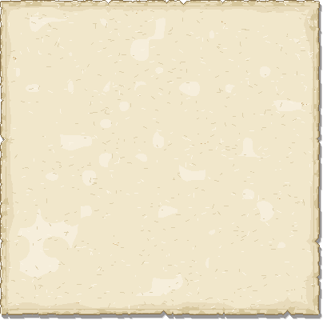
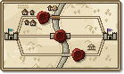
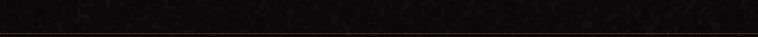
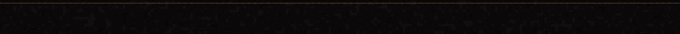

The Training Field The road west must open before the march begins.
Rivergate Valley Domination Easy The company Maud Enter
March
Enter
March
Esc
Back to the book



The Training Field The road west must open before the march begins.
Rivergate Valley Domination Easy The company Maud
Enter
March